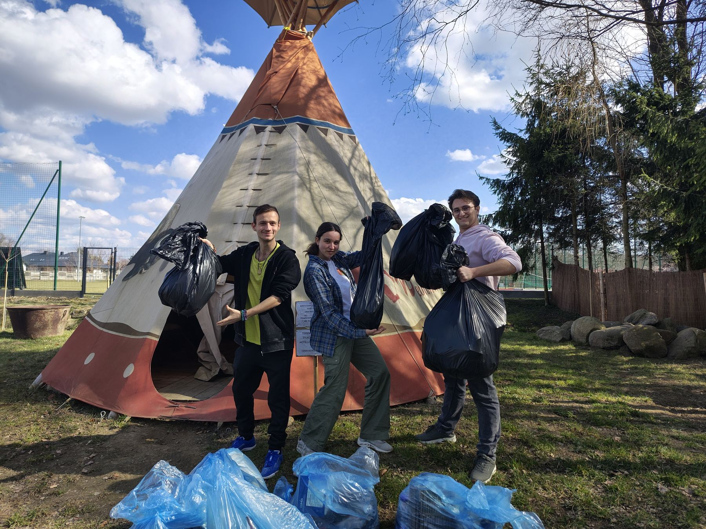
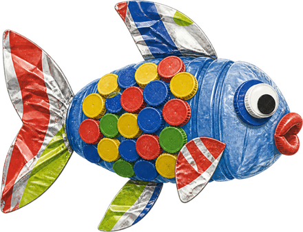
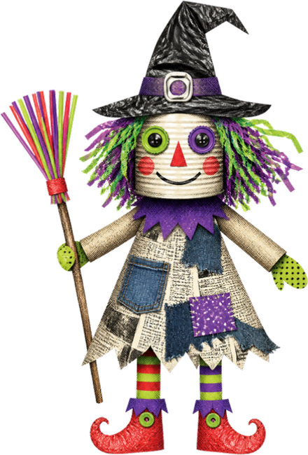
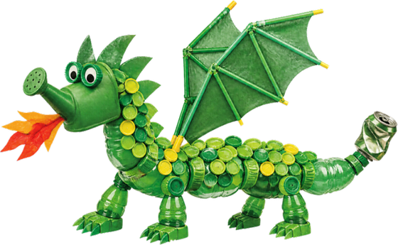
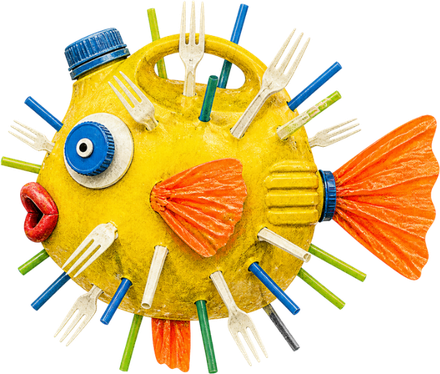
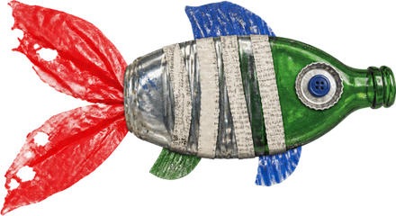
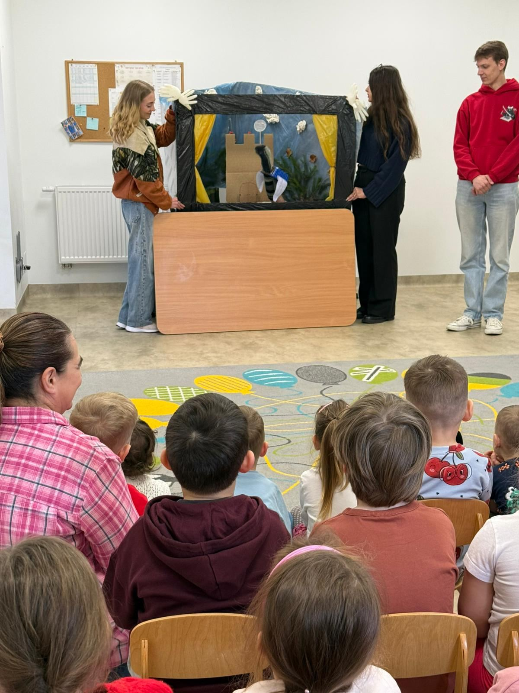

Environmental awareness through experience
Cleaning up, sorting waste and seeing a recycling plant up close made sustainability concrete, not theoretical.
What happens when young people from five European countries pick up litter, then turn it into puppets? A week of creativity, learning and laughter — ending with a kindergarten audience that learned to care for the planet.

From 11 to 19 March 2026, in Krosno and Rymanów, Poland, the Erasmus+ youth exchange The Masters of Puppets brought together young people from Poland, Romania, Bulgaria, Slovakia and Turkey.
Together, the participants set out to answer one question: how can creativity help us respond to environmental challenges?
Young people and partner organisations from across Europe — hover a flag to say hello.
How can creativity help us respond to environmental challenges?
The week began with games and challenges to break the ice: name games, “human bingo,” elevator-pitch introductions and speed-dating-style conversations. Within a day, five national groups had become one international team.
Then the real work started. Participants cleaned up the streets of Rymanów, collecting plastic bottles, glass, nylon and other waste from public spaces, and spoke with local residents about their recycling habits. Back at base, they cleaned and sorted the materials — the trash that would soon become their raw material.
To see the bigger picture, the group visited the MPGK Krosno Recycling Center, where an expert presentation and a facility tour showed how waste is sorted, recycled and turned into energy on an industrial scale.
At the heart of the project was the creative process. In mixed-nationality teams, participants designed puppet characters, wrote environmental stories and scripts, and built puppets, stage sets and backdrops from the waste they had collected.
In an AI creativity workshop, they used tools such as Veo, Grok and Gemini to create animated videos of their characters and stories, later shared on YouTube, Instagram, Facebook and TikTok. A 3D printing session produced props and accessories for the shows — a modern twist on a traditional craft.
After days of rehearsals, feedback sessions and fine-tuning of narration and puppet movement, five original puppet theatre performances were ready.
Inspired by the puppets built during the exchange: three fish, a witch and a green dragon made from bottles, cans and caps. Grab one and give it a swing.






The finale brought the moment everyone had been working toward: performing for children at a kindergarten in Jedlicze. Through colourful characters and simple stories, the shows taught recycling, avoiding littering, caring for nature and the consequences of pollution.
The children’s reactions said it all. They talked back to the narrator, joined in eagerly and repeated the moral of each story. For many participants, seeing their work make a real difference to a young audience was the highlight of the week — and exceeded what they had expected.
Name games, human bingo, elevator pitches and speed-dating-style conversations.
Collecting plastic, glass and nylon from public spaces and talking to residents about recycling.
Seeing how waste is sorted, recycled and turned into energy on an industrial scale.
Building puppets and sets from waste, AI video workshop and 3D-printed props.
Feedback sessions on narration and puppet movement.
Five performances for a kindergarten audience.
Youthpass workshops, reflection sessions and evaluation.
Cleaning up, sorting waste and seeing a recycling plant up close made sustainability concrete, not theoretical.
Every puppet and stage element showed the circular economy in action.
Puppet-making, scriptwriting, stagecraft, AI tools and 3D printing — often new territory for participants.
Teaching children gave participants a real sense that they can make a positive difference in their communities.
Intercultural evenings with traditional food, music and quizzes broke down stereotypes and strengthened European cooperation.
Participants left not only with new skills, but with proof that a bag of rubbish, some imagination and a team of friends can teach a room full of children to care for the planet.
The Masters of Puppets was organised by Sztuka Ekologii (Poland) together with its partner organisations Asociația AVR (Romania), IYAC Bulgaria (Bulgaria), Mlada Vlna (Slovakia) and USAKA (Turkey).
Co-funded by the Erasmus+ Programme of the European Union. Views and opinions expressed are however those of the author(s) only and do not necessarily reflect those of the European Union or the European Education and Culture Executive Agency (EACEA). Neither the European Union nor EACEA can be held responsible for them.